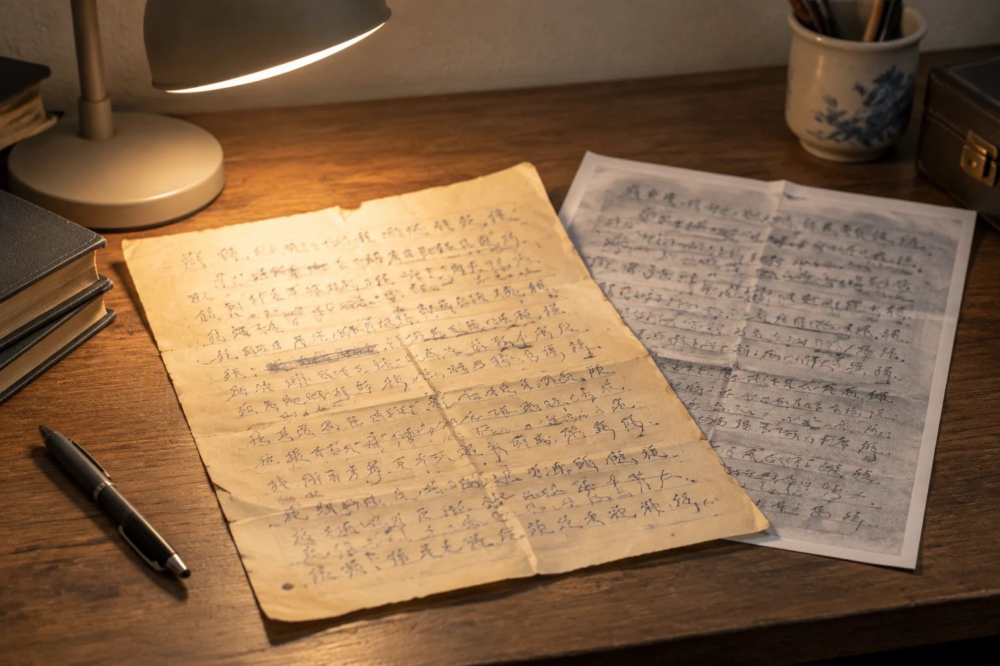

南京笔迹鉴定资料颜色发黄，转成黑白会更好吗
旧纸张的底色会影响视觉对比，但转成黑白也可能损失浅色线条。纸面看起来更白，不代表细节变得更多。

先看哪些内容难辨
南京笔迹鉴定图像资料中，纸张泛黄与照片色偏可能同时存在。处理前先检查淡墨、细笔画和交叉位置。若这些部分在彩色图里仍可见，直接高对比转黑白可能把它们丢掉。不要只根据背景是否洁白来判断哪个版本更适合继续阅读。
阅读副本与原图分开
为了方便查看可以另存灰度版本，但原始彩色文件应保留。模仿笔迹参考中的纸纹、格线和旧污迹，有时能帮助定位对应页；处理时若全部抹平，可能连关联线索一起消失。副本名称说明处理方式，避免被后来接手的人误认为首次扫描。
署名细线尤其要核对
模仿签名、模仿签字的局部常包含较细的连接，转换之后应回看它们是否仍然完整。黑白图看上去干净，并不能证明原来只有这些线条。若手头只有处理版，目录中注明缺少原图，后续再寻找更接近原始材料的文件，不反向补画细线。
背景说明比滤镜名称重要
交接时写明来自原件拍照、复印扫描或旧照片再拍，比列出滤镜名称更能说明条件。已知调整步骤可补充，未知就留待核实。图像越经过多次转换，越需要保留版本关系，防止把处理差异当成书写差异。